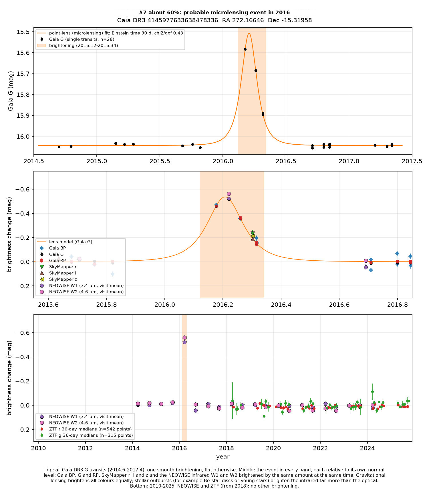
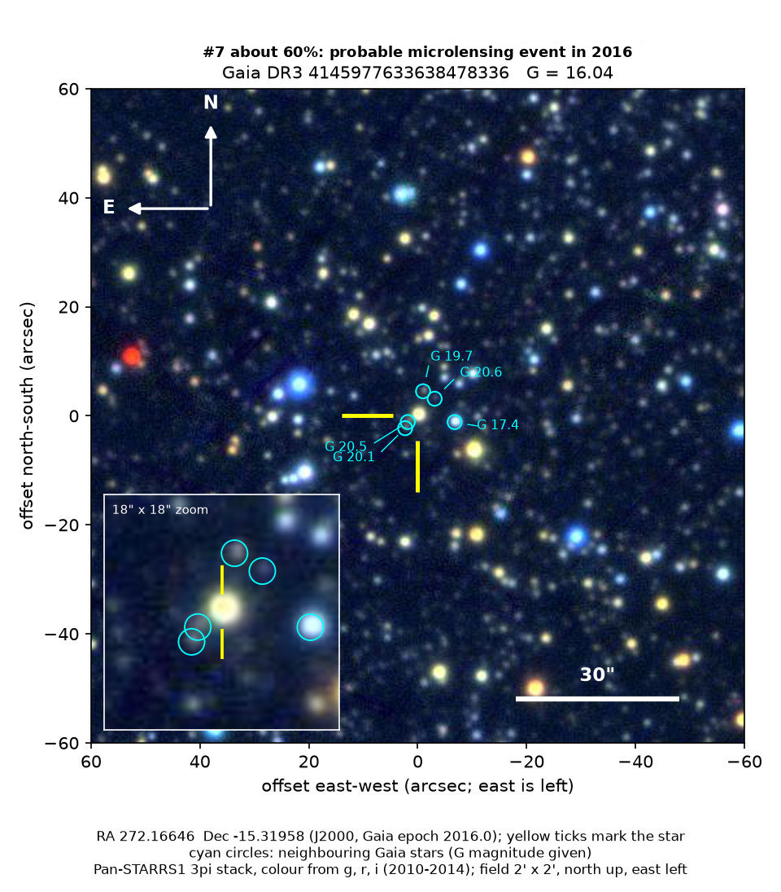

Professor of Mathematics
Paata Ivanisvili
Department of Mathematics, University of California, Irvine

Candidate 7: a star that brightened by 60% for about two months
Why this estimate. Three instruments recorded the same brightening in eight bands, from blue light to the infrared, which makes this the strongest evidence for lensing among these candidates. But Gaia caught the event in only three visits, so its shape alone does not establish lensing, and the star lies in a sparsely observed OGLE field that lists no event.
How to read the pictures. The finder chart shows a patch of sky two arcminutes across, about a fifteenth of the Moon’s width, with north up and east to the left. The star sits between the two yellow ticks, and the white bar is 30 arcseconds long. On a light curve the vertical axis is magnitude, a brightness scale on which larger numbers mean fainter stars, and it is drawn so that down means fainter. Orange shading marks the change. Each survey uses slightly different filters, so each is compared with its own normal level.
Dates such as 2016.22 are written as a year plus a fraction of a year: 2016.00 is the start of 2016, and 2016.50 is about halfway through it.

What changed. This is a distant star in Serpens, in the direction of the inner Galaxy, 2.2 degrees above the mid-plane of the Milky Way and 14 degrees from the Galactic centre. Its parallax, Gaia’s measure of distance, is 0.11 ± 0.05 milliarcseconds, which puts it several thousand parsecs away, in a crowded field. Gaia measured it 28 times between 2014 and 2017. It was steady except in early 2016, when it was 0.46 magnitudes brighter than normal at 2016.18, 0.36 at 2016.26 and 0.15 at 2016.32, and it was back to normal by 2016.7. In each of those visits the blue, green and red bands agree to within 0.05 magnitudes.
Two other telescopes caught the event. NEOWISE, at 2016.22, close to the peak, found the star 0.52 magnitudes brighter than normal at 3.4 microns and 0.56 magnitudes brighter at 4.6 microns. SkyMapper, at 2016.30, found it 0.19 to 0.23 magnitudes brighter in the r, i and z filters, when Gaia had it about 0.20 magnitudes brighter. NEOWISE observed the star twice a year from 2014 to 2024, and ZTF observed it from 2018 to 2025; neither saw anything else.
Why it might matter. Gravitational lensing brightens a star once, smoothly, and by the same factor at every wavelength. This star brightened by the same amount in eight bands, from blue light to 4.6 microns, by between 0.2 and 0.5 magnitudes depending on the date, and only once in ten years. Outbursts and flares, by contrast, change colour strongly, and no ordinary variable star is known to brighten like this. Gaia’s classifier labelled it as microlensing.
The event may be new. It is not in Gaia’s published list of 363 microlensing events, it has no Gaia alert, and it has no entry in SIMBAD, VSX (the variable-star index) or the Transient Name Server. Nothing about it appears on arXiv either. It is not in the OGLE or KMTNet microlensing lists for 2014 to 2018, nor in OGLE’s published list of events in the Galactic disc (Mroz et al. 2020). Microlensing is an expected kind of event, not an exotic one.
- Star
- Gaia DR3 4145977633638478336
- Location
- RA 272.16646°, Dec −15.31958° (J2000), in Serpens
- Distance
- parallax 0.11 ± 0.05 milliarcseconds, so several thousand parsecs away
- Brightness
- Gaia G = 16.0
- Probability
- This candidate is unconfirmed. The percentage under the title is an estimate of the chance that it is a real, previously unrecorded case of the kind described. The estimate has not been checked by outside experts. See the introduction to all twelve candidates.
- Caveat
- Gaia caught the event in only three visits, with five measurements, so the shape alone cannot prove lensing: a plain symmetric bump fits as well, and the lensing timescale, about 30 days, is only a rough estimate. The case rests on the colours agreeing and on three instruments seeing the same thing. The star sits 0.4 degrees from the centre of an OGLE field, BLG767, which was imaged 80 times over about three years; those images may or may not cover early 2016. Four faint stars, with G from 19.7 to 20.6, lie within 5 arcseconds, and a star of G = 17.4 lies 6.9 arcseconds away. WISE cannot separate them, but the infrared brightening matches Gaia’s, so the change in light belongs to this star.
